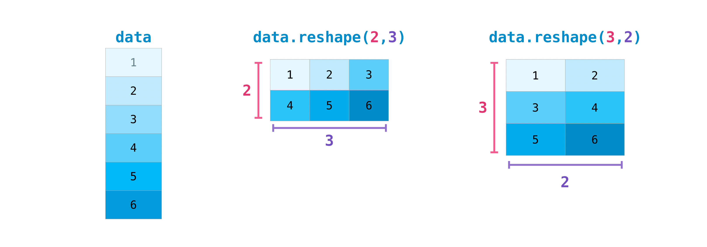
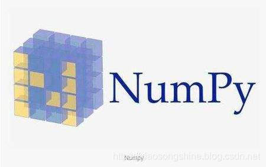

Learn Coding
Motivations
Python does not cover the data structures normally used in science/engineering.
Numpy comes in to support data manipulation of n-dimensional arrays.
Extensive library of functions to reshape data.
Comprehensive collection of mathematical operations.
See numpy.org/ for a comprehensive introduction
Arrays
The computer version of vectors and matrices from Maths
a sequence of uniform-type values, indexed by integers.
Numpy arrays have methods and functions that computed element-wise:
Lists vs. Arrays
A list is a generic sequence of heterogenous objects.
So, strings, numbers, characters, file name, URLs can be all mixed up!
An array is a sequence of strictly-homogenous objects, normally int or float
Same indexing notation as lists:
array([6.28, 6.3 , 6.32, 6.34, 6.36])Notation
1-dimension: an array (sequence of numbers): [1, 23, …]
2-dimensions: a matrix (table of numbers) [ [1, 23, …], [14, 96, …], ...]
3-dimensions: a tensor (box/cube/cuboid) of numbers: [ [ [1, 23, …], [14, 96, …], …], ...]
2-D Numpy Arrays
array([[ 0, 1, 2, 3, 4, 5, 6, 7],
[ 0, 2, 4, 6, 8, 10, 12, 14]])Axes
Arrays can have more than 2 dimensions
Each is called axis
N. B. unlike Pandas, not specifying the axis will apply a function to the entire array.
Shapes
Using information about the shape we can create/manipulate (or reshape, or transpose) Numpy variables.
array([[0, 0, 0],
[0, 0, 0]], dtype=int32)
Keeping shapes uniform
Array operations are defined only between objects of the same shape
Stacking
2-D arrays with the same dimensions can be merged
N-dimensional arrays
Motivations
Physics/Engineering often uses 4-dimensional tensors: 3 space coordinates + time
Numpy can handle multiple dimensions.
This is useful when dealing with multivariate data, from time series to documents.
Example: collect N interviews, there are 2 questions and for each there is a score from the respondent and a score from the interviewer:
Slicing by Boolean filters
Select data according to specific conditions
A Boolean filter can winnow the array according to a yes/no, in/out condition
a Boolean filter can be represented by a Numpy array!
More slicing
